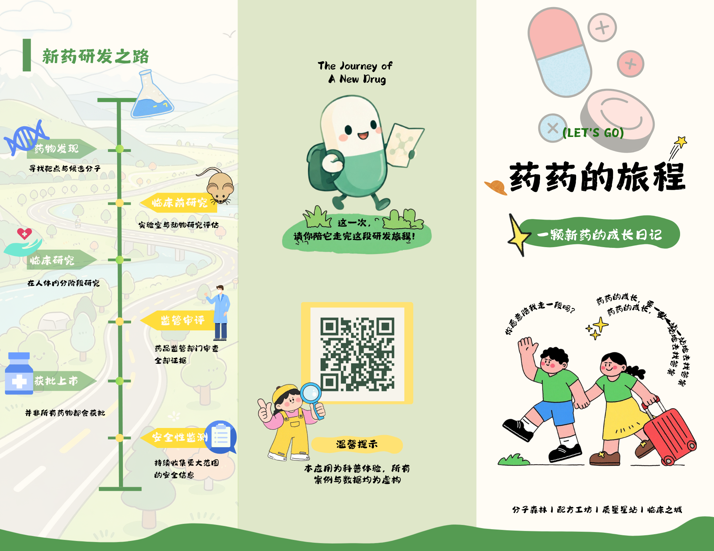

PHARMACY COTTAGE · 3D
药药的小屋
拖动旋转木屋，滚轮或双指缩放。点击纪念品柜、研究日记、研发地图、信箱和药药， 打开小屋里的研究记录。
正在布置小屋…
FOUR PERSPECTIVES
你的药学人格，
是哪一个出发视角？
人格只是一扇观察窗口。四种视角没有高下，四个场景也都可以自由探索。
RESEARCH ATLAS
研发地图
四个观察站可按任意顺序探索。点击地图上的站点，前往对应的研究场景。
药药的研究旅行图
点击站点继续
FOUR SCENES
四站旅程
每张场景图都保留原小程序中的闪烁热点位置。点击光点，查看这一件物品想回答的研究问题。
ONE LIVING WORLD · 3D
四个场景，合成一座研发世界
四个研究场景围绕小屋展开。拖动旋转整个世界，滚轮缩放，点击发光的研究物件读取解释。
正在连接四站…
分子森林
配方工坊
质量星站
临床之城
拖动旋转
滚轮缩放
点击发光物件
可打开四大场景图
THREE ENDINGS
药药的三种结局
三张结局纪念卡对应药药旅程的三种结果。